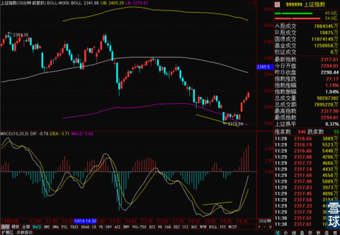
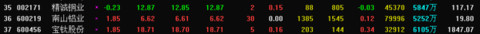
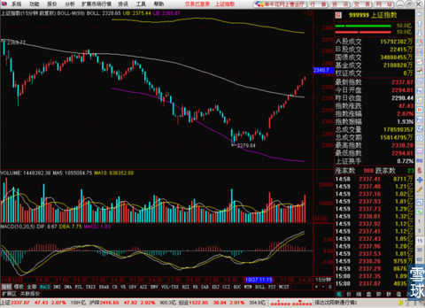
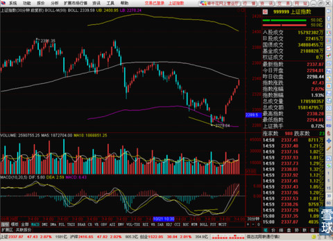

我也是真服了国务院和证监会了，就沪港通这么大个事延误了。市场利用这个消息先打后来，在股指期货上兴风作浪，就是谁也不站出来表态，就是一声不吱，让市场怎么胡乱猜测和解释。再看看港交所李小加那边，天天出来澄清和谈话。真是公司和政府两种完全不一样的态度。就说《证券法》和A股交易制度怎么改有用啊？一帮官老爷作风和无视投资者心态的人执掌下，改什么都白费！今天上午的走势昨天也预测了，下面有MA60和MA888双支撑在，30分钟明显的小双底加底背离，今天红盘保收基本是定居。

但是现在关键问题是，一上午高开之后直接高走。留下了一个不到一个点的小缺口。这个缺口今天当日回补的可能性很小了。但是这个位置出现缺口，早晚是需要补一下的。而且这个位置直接V型反转对后市也不是很好。最有可能是走出W型。在MA60穿越MA888的时候再调整一次，那次调整来补这个缺口。大概时间是本周五或是下周一。
昨天贴了三个有色类股票的截图，

其中精诚铜业昨天上涨5%，其它两只昨天和今天连续两天上涨了。有兴趣的小伙伴们加个自选股没事看看这三只股票吧。
虽然昨天预测到了今天会上涨，但是不得不说实话，涨成这样我是真没想到。我因为涨到2322一带，遇上15分钟线BOLL中轨就会向下回调一些再蓄势上涨。实际情况是15分钟线的BOLL中轨没有给指数造成什么影响。

那么关键问题就来了，现在的结果是收盘正好停在30分钟线BOLL中轨和60分钟线BOLL中轨上。明天是直接过压力位上涨还是遇压力位回调。这可就不好说了。

按照目前的来看，只要今天晚上没有什么不利传言而且外盘正常的情况下，大概率事件是明天开盘直接开在60分钟线上，之后先上涨后回调考验这个压力转支撑的位置。
至于有小伙伴问说，有传言说明天回低开低走。这个说法不是没有可能，而是现在的消息和盘面技术指标还看不到特别明显支撑这一说法的证据，没有确切事实支持的事即使有可能也不能随便说，所以暂时还是保持对上证指数的乐观估计，毕竟今天这样的逼空上涨已经出现一点的惯性，不会突然就停下来直接逆转。
上午提到的三只有色股票还停给面子，涨的不错。这三只股票从日线上看还不能保证会连续上涨，但是从周线上看，比较有长线的启动迹象，有耐心拿得住的小伙伴可能多关注，找机会买了做长线。
今天这样的走势再一次说明一个问题，股市里的风险和机会是并存的。关键在于，有人看到连续的下跌就开始想办法找机会，有些人是直接被恐惧感困住，不能想更不去找机会。所以跌的时候别垂头丧气的不想看盘，那样没有意义，越是跌越应该精神起来。
 |
我也是真服了国务院和证监会了，就SaiLv 2014-10-28 16:06:56 |
Copyright © 1996-2014 SINA Corporation All Rights Reserved.